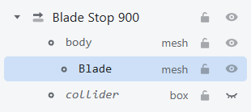
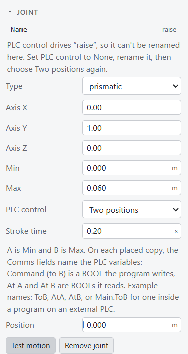
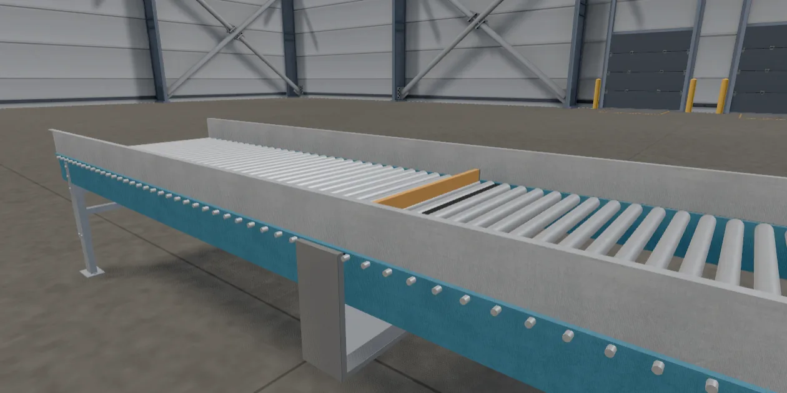

A part moves by its joints. A joint lets one piece of the model slide or turn, and a PLC program drives it
through the part's tags, the same way it drives a conveyor or reads a sensor.
In this guide you make the blade of your blade stop rise when a PLC program sets one BOOL, and sink again when
it clears it. The part needs no code: the Part Editor writes it. It takes about ten minutes.
Right-click Blade Stop 900 in the Scene dock, or its model in the view, and choose
Open Part Editor. The Scene dock now lists the part's nodes, body and
collider, under ‹ Scene. What you change here changes the part itself, so every
copy in the scene follows.
2. Split the blade out
The whole model is one node, body, and a joint moves a whole node. So the blade first needs a node of its
own.
Click body in the Scene dock.
In the Inspector's Split into pieces section, click Blade.
A new node, Blade, appears under body and is selected. It holds the blade and its two guide rods,
the pieces of the Blade group in the file. Nothing moves: a split piece stays where it is.

The blade, split out into a node of its own.
3. Give it a joint
With Blade selected, click Add joint near the bottom of the Inspector. A
Joint section opens. Type or pick these, pressing Enter after each:
Field
Set to
Meaning
Name
raise
The joint's name. The part's tags and script use it.
Type
prismatic
The node slides. A revolute joint turns it instead.
Min
0
The lowest it goes, in metres from where it is now.
Max
0.06
The highest: 6 cm up.
Leave Axis at 0, 1, 0, which is straight up. The blade's top sits 1 cm below the rollers,
so raised by 6 cm it stands 5 cm above them, enough to stop a box.
Click Test motion. The blade rises and sinks twice, then goes back to rest. If it moves
the wrong way, check the axis and the limits.
4. Let the PLC drive it
A real blade stop is an air cylinder with two positions, down and up. The joint can work the same way without
any code. In the Joint section:
Field
Set to
Meaning
PLC control
Two positions
A BOOL drives the joint between Min and Max.
Stroke time
0.2
Seconds from one end to the other. An air cylinder is quick.
The Part Editor writes the part's behavior script for you and explains the result: A is Min and B is Max. Each
placed copy gets three tags in its Comms group. Command is the BOOL the program
writes: true moves the blade to B, up, and false back to A. At A and At B tell the program which
end it is at, and the next guide uses them.

The blade's joint, driven by the PLC.
5. Wire it and run
Click ‹ Scene at the top of the Scene dock. Select Blade Stop 900, open its
Comms group in the Inspector, and type the program variable:
Part
Field
Type in
Meaning
Blade Stop 900
Command
RaiseBlade
The blade rises while it is true.
Open the PLC tab next to the Parts dock, replace whatever is in its code editor with this
program, and check it reports no errors:
PROGRAM Main
VAR
RaiseBlade : BOOL;
Cycle : TON;
END_VAR
Cycle(IN := NOT Cycle.Q, PT := T#2s);
IF Cycle.Q THEN
RaiseBlade := NOT RaiseBlade;
END_IF;
END_PROGRAM
Every 2 seconds the timer runs out and the program flips RaiseBlade. Press
Play. The blade rises between the rollers, stays up for 2 seconds, sinks, and rises
again. While it runs, the code editor shows each variable's value next to its name.

The blade up, on the program's command.
The stroke time you set in step 4 is each copy's own starting value: select a copy and change its
Stroke Time in the Inspector, and only that copy moves faster or slower.
A piece that turns works the same way: a revolute joint, Min and Max in degrees, and Two positions for a gate or
a flap. For a shaft or a motor that turns without end, tick Spins endlessly and set
PLC control to Spin: the copy then gets a Run tag, and an optional speed tag in
rpm.
Blade is split already. Look for the Blade node under body in the Scene dock.
The whole blade stop moves, not just the blade.
The joint is on body. Click Remove joint there, select Blade, and add it again.
The blade moves sideways, or turns.
The joint's type is still revolute, or its axis is not 0, 1, 0. Set them as in step 3.
"PLC control drives “raise”, so it can't be renamed here."
A joint's name is fixed while the PLC drives it. Set PLC control to None, rename it, then choose Two positions again.
The blade does not move when the simulation runs.
Check that the copy's Command holds RaiseBlade, that the PLC tab shows no errors, and that Play is pressed. Without a program driving it, the blade stays at A.
Test motion moves the blade, but it is gone back when I select another node.
That is the test: nothing is saved, and the joint goes back to rest.